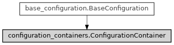

ConfigurationContainer¶
- class ase2sprkkr.common.configuration_containers.ConfigurationContainer(definition, container=None)[source]¶
A container for configuration (problem-definition) options and/or sections.
Options in the configuration (problem-definition) files are grouped to sections, sections are then grouped in a configuration file object. This is a base class for these containers.
Class hierarchy
Constructor
- __init__(definition, container=None)[source]¶
Create the container and its members, according to the definition
Attributes
The members of the container, in a form of
{obj.name : obj}Non-hidden members of the containers, accesible via sanitized names.
Inherited attributes
nameReturn the name of the option/section.
The "definition" of the option or section.
The parent container.
Methods
__contains__(name)The check for existence of a member with the given name.
__dir__()Expose the interactive_members in the container attribute listing.
__getattr__(name)The members of the container are accesible as attributes of the container, too.
__getitem__(name)The members of the container are accesible using
container["member name"]notation.__init__(definition[, container])Create the container and its members, according to the definition
__iter__()Iterate over all members of the container
_add(member)_find_value(name)Find a value of a given name in self or in any of owned subcontainers.
_get_member(name)Return the member of the container of a given name.
_interactive_member_name(name)Create a sanitized name from a member-name.
add(name[, value])Add custom value to the container
as_dict()Return the content of the container as a dictionary.
clear([do_not_check_required])Erase all values (or reset to default) from all options in the container (ad subcontainers)
get([name, unknown])Get the value, either of self or of a child of a given name.
members()Members of the container.
remove_member(name)Remove a (previously added) custom value from the container
save_to_file(file, *[, validate])Save the configuration to a file.
set([values, unknown])Set the value(s) of parameter(s).
to_string(*[, validate])Return the configuration (problem definition) in a string.
Inherited methods
_get_path([include_root])Return the dot-delimited path to the item in the configuration tree.
_get_root_container()Return the root object of the configuration tree.
to_dict()Return the value of self, in the case of container as a dictionary.
- _members¶
The members of the container, in a form of
{obj.name : obj}
- _interactive_members¶
Non-hidden members of the containers, accesible via sanitized names. I.e. via names with whitespaces and other special characters replaced by underscore. These sanitized names are then used as names for “attributes” of this container, to make the members accesible via
<container>.<member>notation.
- members()[source]¶
Members of the container. I.e. the option of the section, or sections of the configuration file e.t.c.
- Returns
members (dict)
A dictionary of the shape
{ name : member }
- _get_member(name)[source]¶
Return the member of the container of a given name. It search either the members and interactive_members containers
- clear(do_not_check_required=False)[source]¶
Erase all values (or reset to default) from all options in the container (ad subcontainers)
- Parameters
do_not_check_required (bool) –
(default) (Do not check validity of the values after clearing. If False) –
argument (is passed as this) –
value (the required option without a default) –
exception ((or a section containing such value) throw an) –
the (which prevents) –
(neverthenless (clearing) –
anyway). (previous values in the section will be cleared) –
- get(name=None, unknown='find')[source]¶
Get the value, either of self or of a child of a given name.
- Parameters
name (None or str) – If None, return contained values as a dictionary. Otherwise, return the value of the member with the given name.
unknown (str or None) – If unknown == ‘find’ and there is no member with a given name, try to find the first such in descendant conainers.
- Returns
value
- Return type
mixed
- set(values={}, *, unknown='find', **kwargs)[source]¶
Set the value(s) of parameter(s). Usage:
> input_parameters.set({‘NITER’: 5, ‘NE’: [10]}) or > input_parameters.set(NITER=5, NE=[10])
- Parameters
options (values or None) – Dictionary of values to be set.
unkwnown ('add', 'find' or None) – How to handle unknown (not known by the definition) parameters. If ‘find’, try to find the values in descendant containers. If ‘add’, add unknown values as custom values. If None, throw an exception. Keyword only argument.
**kwargs (dict) – The values to be set (an alternative syntax as syntactical sugar)
- add(name, value=None)[source]¶
Add custom value to the container
- Parameters
name (str) – Name of the added value
value (value) – Value of the added value
- remove_member(name)[source]¶
Remove a (previously added) custom value from the container
- Parameters
name (str) –
- as_dict()[source]¶
Return the content of the container as a dictionary. Nested containers will be transformed to dictionaries as well.
- to_string(*, validate=False)[source]¶
Return the configuration (problem definition) in a string.
- Returns
configuration (str)
The configuration, as it should be saved in a configuration/problem definition file.
- _find_value(name)[source]¶
Find a value of a given name in self or in any of owned subcontainers.
- Parameters
name (str) –
options (A name of the sought) –
- Returns
value (typing.Optional[ase2sprkkr.common.options.Option])
The first option of the given name, if such exists.
Noneotherwise.